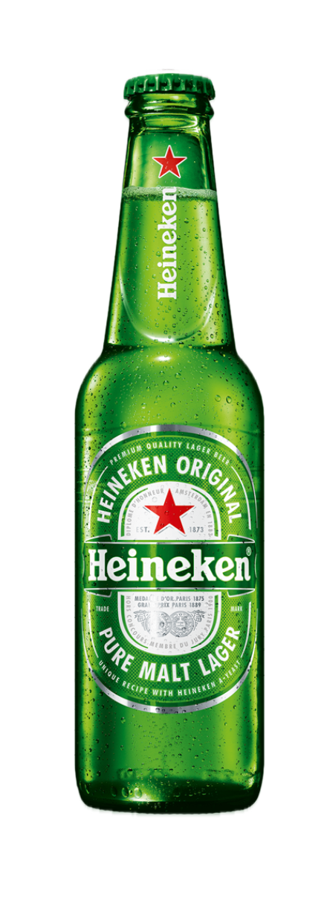
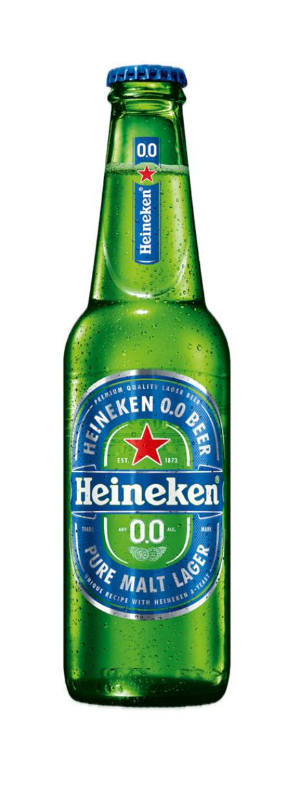
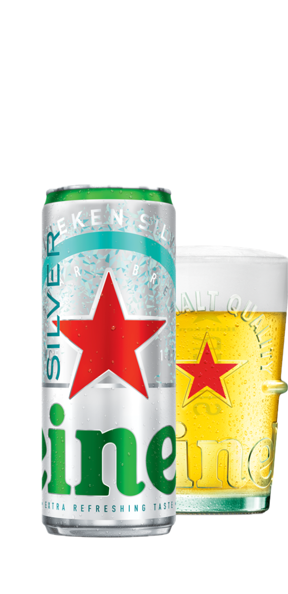

In Nederland geboren, door de wereld groot gebracht.
Het beste bier wordt gebrouwen in een betere wereld.
Pure Malt Quality
Iets dat je herkent is altijd verfrissend. Een koude, verse Heineken® van hoge kwaliteit. Er wordt overal van genoten sinds 1873.
Ontdek meer 100% heerlijk, 0% alcohol. We zijn trots op onze Heineken® 0.0. Gebrouwen met toewijding en onze doorgegeven kennis van bier.
Ontdek meer Geniet van de extra verfrissende smaak van Heineken® Silver met je vrienden op echte momenten. Gebrouwen met natuurlijke ingrediënten en gelagerd op een ijskoude temperatuur van -1 °C. Extra fresh, for real.
Ontdek meer Verantwoord alcoholgebruik is belangrijk voor ons. We weten dat ongelukken niet alleen op de weg ontstaan. Dat is waarom we verantwoord alcoholgebruik aanmoedigen, of je nou degene bent die rijdt of niet. Daarnaast geloven wij dat de beste chaffeur altijd degene is die geen alcohol drinkt.
Ontdek hoeGetapt uit het vaatje van onze rijke historie en trotse erfenis, vertellen onze campagnes het verhaal van ons merk. De stem van Heineken is gevat, nuchter en verfrissend. Onze visie is positief en ja, soms een tikje brutaal. Eén ding is zeker, elke campagne is 100% Heineken®. Proost!